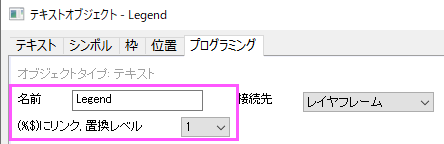
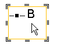
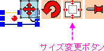
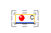
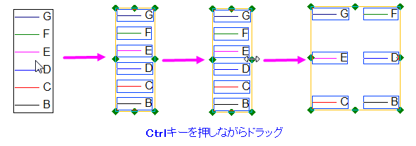
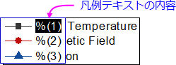
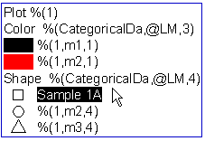
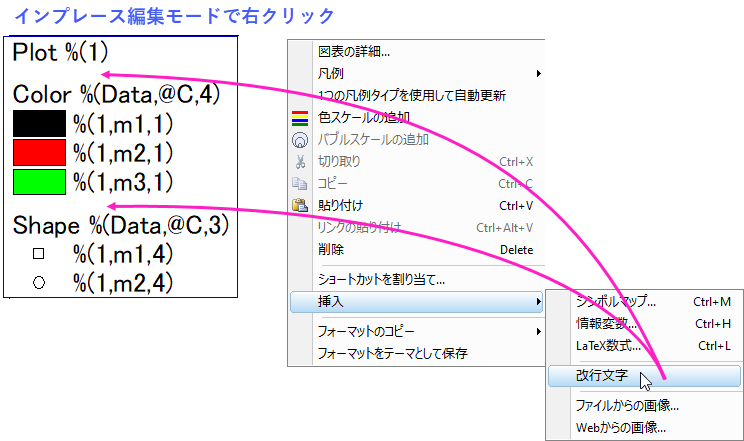
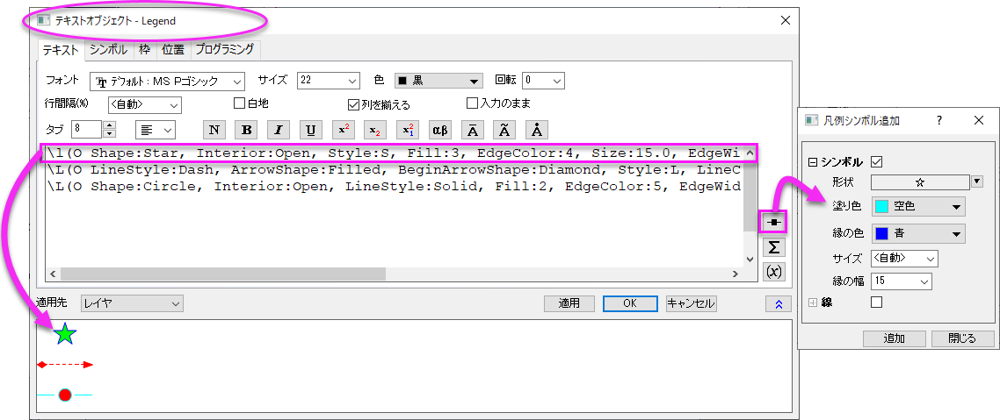

グラフの凡例の編集
Legend-ManualControl
オブジェクトのプログラム制御
グラフ凡例は、プログラムコントロールを提供するために「Legend」という名前が割り当てられた特殊なテキストオブジェクトです。凡例オブジェクトの名前を確認するには、凡例上で右クリックしてプロパティを選択します。開いたダイアログのプログラミングタブを開きます。

Note: (%,$)にリンク, 置換レベルドロップダウンリストは1で、凡例オブジェクトがソースデータにダイナミックにリンクしています。（例えば、既存プロットを新しいプロットに置き換えるなどソースデータの変更を行った場合、凡例も自動で更新されます。）
凡例オブジェクトの名前の変更
凡例オブジェクトは、Origin内で特別な意味を持つ「Legend」という名前を持つ特別なテキストオブジェクトなので、このセクションで説明するような編集を行ったら、それを保持するために名前を変更する必要があります。それ以外の場合、凡例オブジェクトをリフレッシュする操作によって、編集内容が上書きされることがあります。凡例オブジェクトの名前を変更すると、静的テキストオブジェクトになり、プログラムで制御できなくなります。
凡例オブジェクトの名前の変更
- 凡例オブジェクトをクリックして、選択します。
- メニューから、フォーマット: オブジェクトプロパティを選択します。
または
右クリックして、ショートカットメニューからプロパティを選択します。
- プログラミングタブに移動し、
- オブジェクト名を変更し、「Legend」以外の文字にして、 OKをクリックします。
凡例オブジェクトのサイズの変更
凡例オブジェクトのサイズを手動で変更するには、次の2つの方法があり、シンボルやテキストのサイズを大きくしながらあるいは、せずにオブジェクトのサイズを大きくすることができます。
- 凡例オブジェクトのサイズを大きくしながら、データプロットのシンボル/テキストのサイズを変更するには（2Dまたは3Dグラフ上の凡例に対して）、
- 凡例オブジェクトをクリックすると8つのアンカーポイントが表示されます。

- アンカーポイントをドラッグして凡例オブジェクトのサイズを変更します。縦横比が維持されたまま、データプロットシンボルとテキストはサイズが変わります。
- シンボルとテキストのサイズを大きくせずに凡例オブジェクトのサイズを変更するには（2Dや3Dグラフの凡例）、
- 凡例の背景の境界線にカーソルを移動します。そして、カーソルがに形を変えたらクリックしてサイズ変更ハンドル(「=」マーク)が現れます。
- 
- ハンドルをドラッグして、背景のサイズを変更します。
また、テキストオブジェクトの表示属性 object.margin.left/right/bottom/topを使用して凡例の余白を変更できます。
- 凡例オブジェクトのみサイズ変更するには(3Dグラフ凡例)、
- 3Dグラフ内の凡例オブジェクトをクリックすると、オブジェクト制御ボタングループが表示されます。
- 
- リサイズボタンをクリックし、サイズ変更のハンドル( " = " マーク)を表示させます。
- 
- ハンドルをドラッグして、背景のサイズを変更します。このコントロールはデータプロットシンボルとテキストのサイズは変更しません。
凡例を1列/1行の構成にする
凡例をすばやく1列/1行の構成にするには、凡例の上で右クリックして、凡例：水平/垂直に揃えるを選択します。
凡例を複数列の構成にする
2Dグラフの凡例の構成を複数の列にするには、まず凡例オブジェクトをクリックして選択し、Ctrlキーを押しながら緑のハンドルをドラッグします。各凡例要素間の間隔を調節するには、再度Ctrlキーを押しながら緑のハンドルをつかみ、ドラッグします。
- 
凡例オブジェクトプロパティダイアログ
凡例オブジェクトのプロパティダイアログは、グラフ凡例の内容、フォーマット、位置などを編集するために役立ちます。凡例オブジェクト上で右クリックして、プロパティを選択します。
- テキスト: 凡例シンボルとテキストを作成するLabTalkコードの修正と多くのテキストフォーマットオプションを利用できます。さらに、手動でシンボルを追加したり、プロットの関連した変数を挿入したり、シンボルマップを開くことができます。テキストタブのコントロールを参照してください。
- シンボル: シンボルのフォーマットを編集します。変更はすべてのプロットシンボルに適用され、後続の凡例の更新および再構築の操作でも保持されます。シンボルタブのコントロールを参照してください。
- 枠: 凡例の枠の設定をします。枠タブのコントロールを参照してください。
- 位置: サイズ、アンカーポイント、凡例オブジェクトの移動を制御します。位置タブのコントロールを参照してください。
- プログラミング: 置換レベル(プログラムコントロールで重要)、凡例オブジェクトの名前、グラフページまたはプロットに特定の操作をしたときに実行するスクリプト等を制御します。プログラミングタブのコントロールを参照してください。
凡例オブジェクトを手動で編集
デフォルトで、Originのグラフテンプレートは、グラフ凡例の作成時にプロットメタデータを使用するように設定されています。このメタデータは、通常、データインポート時にワークシートに読み込まれ、ワークシートの列ラベル行領域に格納されます。たとえば、多くの2Dグラフでは、コメント行に格納されているテキストを使用します。ない場合は、ロングネームまたはショートネーム行のテキストが表示されます。他に、ロングネーム&単位を使用することもできます。いずれにせよ、これらはカスタマイズ可能で、グラフテンプレートを使用してデフォルトとして保存することができます。一般に、このように凡例を編集することをお勧めします。
しかし、グラフの凡例を手動で編集したい場合があるかもしれません。任意の種類の凡例オブジェクトに対して、デフォルトの%( )置換表記を上書きし、手動で追加したシンボルまたはテキストで置き換えることができます。これは次のように操作します。
- 凡例オブジェクトをダブルクリックするか、右クリックしてプロパティを選択します（プロットシンボルまたはテキスト）。
- 凡例テキスト上でCtrl + ダブルクリックして、「インプレース」編集を行います（テキストの調整に使用）。
- 
プロパティダイアログで凡例シンボルとテキストの挿入
プロパティダイアログボックスを使用して、シンボル（線を含む）とテキストを手動で挿入できます。これにより、ユーザ定義のシンボルを含め、シンボルギャラリーのすべてのシンボルにアクセスできます。
- 凡例オブジェクト上で右クリックして、プロパティを選択します。
- テキストタブで、ダイアログ右側の凡例シンボル追加ボタン
 をクリックします。
をクリックします。
- シンボルのオプションを選択して、追加します。
- 挿入されたシンボルコードの最後にラベルを追加します。凡例のテキストを手動で入力することも、LabTalk置換表記を使用してプロットメタデータを凡例に組み込んだテキストを作成することもできます。 詳細情報は、凡例テキスト編集の凡例の置換表記を確認してください。
凡例テキストを直接編集
単純なテキスト編集の場合は、プロパティダイアログボックスを表示せずに、凡例テキストの「インプレース」編集ができます。
- 凡例テキスト上でCtrl+ダブルクリックして、インプレースの編集モードを使用します。
- %( ) 置換表記を選択して、任意のテキストで上書きします。
- 
凡例オブジェクトへの行セパレータの挿入
凡例 (または任意の複数行テキストオブジェクト) の各エントリの行間隔は、 プロパティダイアログのテキストタブにある行間隔 (%)によって制御されます。このコントロールを使用して、凡例オブジェクトの行間に均一な間隔を適用します。
凡例エントリ間に不等間隔な行間隔を作成するには
- 凡例オブジェクトをダブルクリックしてインプレース編集モードにして、カーソルを行末に置きます。
- 右クリックして挿入：改行文字を選択します。
- 
- または、さらに細かく間隔を設定するには、凡例オブジェクトを右クリックしてプロパティを選択します。編集ボックスで、行末にカーソルを置き、セパレータボタンをクリックします。これにより、 \sep:nnエスケープ シーケンスが編集ボックスに挿入されます。エスケープシーケンスの数値部分で、挿入されたスペースの高さ (フォントの高さの%) です。必要に応じて数値部分を調整します。
凡例エントリの構成方法
Originは、4種類の凡例オブジェクトと2種類のスケールオブジェクトをサポートしています。このセクションでは、4つの凡例オブジェクトの凡例エントリの構築に関する詳しい情報を提供します。OriginのLabTalkスクリプト言語を使ってグラフの凡例を構築する方法を理解するにはもう少しの努力が必要ですが、記述されたデータにプログラムでリンクされていない凡例エントリを手動で作成するよりも、最終的には役に立つはずです。
凡例シンボルの構成
データプロットシンボルはデータセットのグラフィカルな指標で、デフォルトでは常にデータプロット自体のスタイルに従います。4つの異なるタイプの凡例オブジェクトのそれぞれは、プロパティダイアログでデータプロットシンボルを作成するための独自のシンタックスを持っています。
Note: 省略可能な引数は角括弧で囲んでいます。
| 凡例の形式
|
デフォルトの構文
|
サンプル
|
| データプロットの凡例
|
\L([LayerIndex.]PlotIndex)
|
- \L(2.1)
- レイヤ2にある1番目のデータプロットのスタイルを使用します。
- \L(3)
- アクティブレイヤにある3番目のデータプロットのスタイルを使用します。
- \L(1, AB0)
- 次のように設定する色付き面積グラフで使用します。作図の詳細：線タブ：曲線以下の塗りつぶし：次のデータプロットまで塗りつぶす-色の上下。アクティブレイヤにある1番目のデータプロットの線のスタイルを使用します。
- \L(1, AB1)
- 2色の色付き面積グラフで使用します。アクティブレイヤにある1番目のデータプロットの上パターンのスタイルを使用します。
- \L(1, AB2)
- 2色の色付き面積グラフで使用します。アクティブレイヤにある1番目のデータプロットの下パターンのスタイルを使用します。
|
| カテゴリー値の凡例
|
\L(PlotIndex, mCategoryIndex, CategoryType)
|
- \L(3, m2, 1)
- 3番目のデータプロット(PlotIndex) の2番目のカテゴリエントリ(mCategoryIndex)にあるスタイルをカテゴリの縁の色(CategoryType)に適用します。
- CategoryType のインデックス番号の完全なリストについては、このヘルプファイルのページを参照してください。
|
| 1ポイントずつの凡例
|
\L(PlotIndex,ElementIndex)
|
- \L(3,4)
- アクティブレイヤにある4番目のデータプロットの4つ目のデータポイントのスタイルを使用します。
|
| ボックスチャート要素の凡例
|
\L(PlotIndex,ComponentChar)
|
- \L(2,W)
- 2番目のボックスチャートのヒゲ線のスタイルを使用します。
- ComponentChar で使用可能な文字の完全なリストについては、このヘルプファイルのページを参照してください。
|
凡例テキストの構成
凡例オブジェクトでは、データプロットシンボルの直後のテキストは、データプロットのソースを説明します。デフォルトでは、オブジェクトプロパティで%( )置換表記を使用してデータプロットシンボルを定義します。%( )置換表記は通常、対応するデータプロットのソースデータ列から変数を呼びます。
デフォルトの凡例オブジェクトごとに使用しているシンタックスの一覧は次の通りです。Note: 省略可能な引数は角括弧で囲んでいます。
| 凡例の形式
|
デフォルトの構文
|
サンプル
|
| データプロットの凡例
|
%([LayerIndex.]PlotIndex)
|
- %(1.2)
- 元データ列のレイヤ1の2番目のデータプロットの情報を使用します。情報はこのグラフウィンドウの変換モードで定義されています。
- %(1)
- アクティブレイヤの1番目のデータプロットの元データ列からの情報を使用します。
- %(1, @V"Above")
- 次のように設定する色付き面積グラフで使用します。作図の詳細：線タブ：曲線以下の塗りつぶし：次のデータプロットまで塗りつぶす-色の上下。「上 1番目のデータプロット」と表示されます。
- %(1, @V"Below")
- 2色の色付き面積グラフで使用します。「下 1番目のデータプロット」と表示されます。
|
| カテゴリー値の凡例
|
%(PlotIndex, mCategoryIndex, CategoryValue)
|
- %(3, m2, 1)
- 3番目のデータプロット(PlotIndex) の2番目のカテゴリエントリ(mCategoryIndex)にあるインデックス値をカテゴリの縁の色(CategoryType)に適用します。
|
| 1ポイントずつの凡例
|
%(PlotIndex,@L,ElementIndex)
|
- %(2,@L,3)
- 2番目のプロットにある3番目のデータのX値を使用します。
|
| ボックスチャート要素の凡例
|
%(PlotIndex,@V"Box_ComponentChar")
|
- %(1,@V"Box_W")
- 1番目のボックスチャートのヒゲの範囲名を使用します。
- ComponentChar で使用可能な文字の完全なリストについては、このヘルプファイルを参照してください。
|
| 異なるレイヤまたはグループからのグラフの凡例
|
%(PlotIndex,@GL)
%(PlotIndex,@GG)
|
- %(2,@GL)
- 2番目のプロットのレイヤ名を使用します。
- %(2,@GG)
- 2番目のプロットのグループ名を使用します。
Layer1などのデフォルトのレイヤ名またはg1などのデフォルトのグループレイヤしかない場合、これらの表記はレイヤまたはグループ情報を空白として表示します。
|
上級者向け
詳細な凡例シンボル編集
凡例オブジェクトのプロパティダイアログボックス（前述）で凡例シンボル追加ボタンを使用して、プロットされたデータとは独立した凡例シンボルを追加できます。シンボルは、プロパティダイアログにある凡例シンボルの追加ダイアログ（テキストタブ）内で完全に作成できますが、その構文についてはこちらをご覧ください：シンボル、ライン+シンボル、ラインを作成するためのオプション

Origin 2017以前での凡例シンボルのカスタマイズ
Origin2018に凡例シンボルの追加ボタンが追加される前は、LabTalkリファレンスのこのセクションで概説されている構文を使ってのみプロットに依存しないシンボルをグラフに追加することができます。
詳細な凡例テキスト編集
%( ) 置換表記の一種である凡例置換は以下のような構文で使用されます。
%([LayerIndex.]PlotIndex[PlotDesignChar] [,@option])
- LayerIndexはオプションの数値です。指定しない場合、アクティブなレイヤが使用されます。
- PlotIndexは数値で必ず指定します。指定したデータプロットのソースデータワークシートを参照します。PlotDesignChar および @option はデフォルトの値があるため、任意で指定します。
- PlotDesignChar データプロとの指定されたデータ列を参照し、X、Y、Zなどの文字を割り当てられます。デフォルトで、ほとんどの2DグラフはPlotDesignCharにYを割り当て、3DグラフはZを設定します。
- @optionはワークシート上のどの情報を凡例のテキストとして使用するか指定します。デフォルトオプションは作図の詳細ダイアログの 凡例/タイトルタブで指定されているものになります。（ダイアログを開くにはフォーマット:作図の詳細(ページ属性)と操作します。）使用可能な@option の一覧と使用のサンプルについては@Optionの完全リストを参照してください。
 | 凡例置換表記に@optionの組み合わせを使うこともできます。このシンタックスは、%(PlotIndex,@(@option1+@option2+...)) です。1つ例をあげると、%(1,@(@LA @LC)) を使用してテキストをロングネームとコメントの組み合わせに置き換えます。
|
凡例編集における詳細情報
LabTalk言語リファレンスの凡例の置換表記を参照してください。